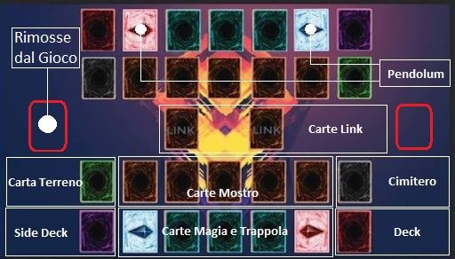

Regole Base
Prima di tutto, per giocare ti servirà un mazzo, chiamato deck, composto da minimo 40 carte e massimo 60, in questo mazzo potrai inserire qualsiasi tipo di carta, tranne le carte syncrho, xyz link e fusione, ma di questo ne parleremo più avanti, intanto vediamo di capire le basi del gioco.
In yu-gi-oh ogni giocatore ha un campo (chiamato terreno) dove puo giocare le sue carte, ed è così strutturato:
- Al centro ci sono, in basso 5 slot per le carte magia e trappola, e sopra 5 slot per le carte mostro. Durante il tuo turno potrai giocare le tue carte negli solt adeguati, purchè essi non siano gà occupati da un'altra carta. Inoltre, gli slot più esterni a destra e sinistra della zona carte magia e trappola sono destinate anche alle carte pendulum.
- A destra viene posizionato in basso il deck e in alto il cimitero.
- A sinistra invece viene posizionato in basso il extra deck e in alto la zona per le carte terreno.
- Tra i terreni dei 2 giocatori, c'è la zona mostri extra, che ha 2 slot.
- Infine sopra ai cimiteri di ogni giocatore c'è una zona per le carte rimosse dal gioco
All'inizio della partita i 2 giocatori che si sfidano a duello posseggono 8000 life points (anche chiamati LP), l'obiettivo del gioco, è quello di ridurre i LP dell'avversario a 0, chi ci riesce vince la partita.
Si inizia pescando 5 carte dal mazzo, e ogni turno si può pescare una carta dal mazzo (in mano si possono tenere al massimo 6 carte)
Ora diamo un'occhiata alle tipologie prncipali di carte:
Carte Mostro
Le carte mostro possono essere normali o con effetto. I due tipi si distinguono facilmente in quanto, sotto all’immagine del mostro, si trova un testo che lo può descrivere (in questo caso si parla di mostro normale) oppure può descrivere un effetto di un mostro (ed in questo caso si parla di mostro con effetto). In entrambi i casi nella parte alta della carta si trova il nome del mostro seguito, nell’angolo a destra, dall’attributo (alcuni esempi di attributo sono: terra, acqua, fuoco, oscurità ecc…). Subito sotto il nome sono presenti un numero di stelle che varia da 1 a 12. Queste stelle sono il livello del mostro (saranno fondamentali per alcuni procedimenti che vedremo a breve). Sotto l’immagine abbiamo una riga che individua il tipo del mostro ed una descrizione che abbiamo analizzato all’inizio del paragrafo. In basso a destra si trovano i valori di attacco e difesa (atk e def). Le carte mostro possono essere giocate (evocate) in posizione di attacco (quindi in verticale) oppure in posizione di difesa (quindi in orizzontale e coperte), questo tipo di evocazione viene detto posizionare.
Quando una carta mostro coperta viene attaccata, questa viene scoperta mantenendo la sua posizione e rivelando le sue caratteristiche, inoltre una carta scoperta non può più tornare coperta. Durante il suo turno il giocatore può cambiare la posizione dei suoi mostri:
- un mostro in posizione di attacco può andare in posizione di difesa (orizzontale scoperto)
- un mostro in posizione di difesa può andare in posizione di attacco e se prima era coperto, adesso viene scoperto (verticale scoperto)
Un mostro può cambiare posizione solo una volta per turno, tranne nel turno in cui viene evocato, dove non può cambiare posizione
Lo scopo delle carte mostro è combattere con le carte mostro dell'avversario, ogni mostro può attaccare una volta per turno:
quando possiedi un mostro in posizione di attacco sul tuo terreno puoi sferrare un attacco con quel mostro.
Se il mostro attaccato è in posizione di attacco si guarda chi ha l'attacco minore, quel mostro è mandato al cimitero, e il suo possessore perde tanti LP quanta è la differenza tra i punteggi di attacco dei due mostri.
Se invece il mostro attaccato è in posizione di difesa e la sua difesa è minore all'attacco del tuo mostro, allora viene distrutto (ma il suo possessore non perde LP), invece se la sua difesa è maggiore, tu perdi tanti LP quanta è la differenza tra i due punteggi (se il mostro avversario era coperto viene scoperto); infine, se i punteggi di di attacco e difesa sono uguali non succede niente.
- quando invece l'avversario non ha altri mostri sul suo terreno, puoi attaccare l'altro giocatore direttamente, diminuendo i suoi LP del punteggio di attacco del tuo mostro.
Alcuni mostri sono più potenti di altri, ma sono anche più difficili da evocare:
- i mostri di livello 5 o 6 hanno bisogno di 1 tributo per essere evocate, questo vuol dire che quando vengono evocate 1 mostro a tua scelta sul tuo terreno deve essere sacrificato e mandato al cimitero (devi avere almeno 1 mostro sul tuo terreno).
- i mostri di livello 7 o superiore hanno bisogno di 2 tributi per essere evocate.
Carte Magia e Trappola
Le carte magia e trappola hanno molte somiglianze, quindi le tratteremo assieme. Ogni carta magia o trappola contiene:
- Il nome della carta
- Il tipo della carta (magia/trappola)
- L'icona (che permette di identificare il sottotipo della carta)
- Numero dellla carta
- Descrizione della carta
Si distinguono tra di loro per il colore, le magie sono verdi, mentre le trappole sono viola, oppure guardando il tipo in alto a destra. Inoltre l'icona permette di distinguere i diversi sottotipi di magie e trappole che vedremo in futuro
Queste carte vengono giocate nella stessa area e di solito, dopo esser state attivate vanno subito nel cimitero, sono carte di supporto che ti permettono di potenziare i tuoi mostri, distruggere quelli dell'avversario e rendere il tuo gioco più imprevedibile, grazie ai loro effetti più disparati.
Carte Magia
Le carte magia possono essere giocate direttamente dalla mano(attivando subito il loro effetto), oppure possono essere posizionate coperte in uno degli slot per poterle usare dopo. Le tue carte magia possono essere usate solo durante il tuo turno
Carte Trappola
Le carte trappola non possono essere attivate direttamente dalla mano, devono essere prima posizione coperte in uno slot, e non possono essere attivate nel turno in cui sono state posizionate. Queste carte però possono essere attivate anche nel turno dell'avversario, per disturbarlo, sorprenderlo e intaccare la sua strategia, molto spesso infatti queste carte si possono attivare solo dopo che avvengono certe condizioni, e costituiscono una sorta di reazione.
Ok ma come si gioca???
Per spiegare le regole complete e precise di come si struttura un turno è meglio approfondire un po' i vari tipi di carte mostro, magia e trappola, ma intanto ti presentiamo una piccola descrizione di un turno
Alice vs Bob
Entrambi i giocatori pescano 5 carte
Turno di Alice
Alice comincia il suo turno senza pescare una carta, perchè gioca per prima
Ora sceglie un mostro dalla sua mano e lo evoca in posizione d'attacco sul suo terreno
Decide anche di posizionare una carta trappola coperta
Il primo turno purtroppo non è permesso attaccare, altrimenti l'avversario non avrebbe modo di difendersi, quindi termina il suo turno
Turno di Bob
Bob pesca una carta
Purtroppo Bob non ha neache una carta mostro in mano, allora usa una carta magia, "anfora dell'avidità", che gli permette di pescare 2 carte dal suo deck (anfora dell'avidità va al cimitero)
Bob ha pescato un mostro e allora lo evoca in posizione di attacco
Con quel mostro sceglie di attaccare il mostro di Alice
L'attacco del mostro di Bob è più alto del mostro di Alice, ma Alice attiva la carta trappola che aveva posizionato... è cilindo magico, che permette di annullare l'attacco, e inoltre fa perdere a Bob tanti LP quanto è l'attacco del suo mostro!!!
Bob non ha altre carte da attivare, quindi passa il turno
Qualche Consiglio
Conviene sempre, per quanto possibile, avere un deck con poche carte, infatti sarà più difficile trovare proprio la carta desiderata con un deck molto grande
Le carte magia non traggono molta utilità dall'essere posizionate sul terreno, ma può aver senso, per far credere all'avversario di avere un trappola in serbo per lui
Il numero della carta non ha nessuna importanza durante una partita, ma serve per identificare una carta, verificare che sia originale e la rarità
Ora che sai le regole di base sei pronto a scoprire le regole riguardo il deck principale